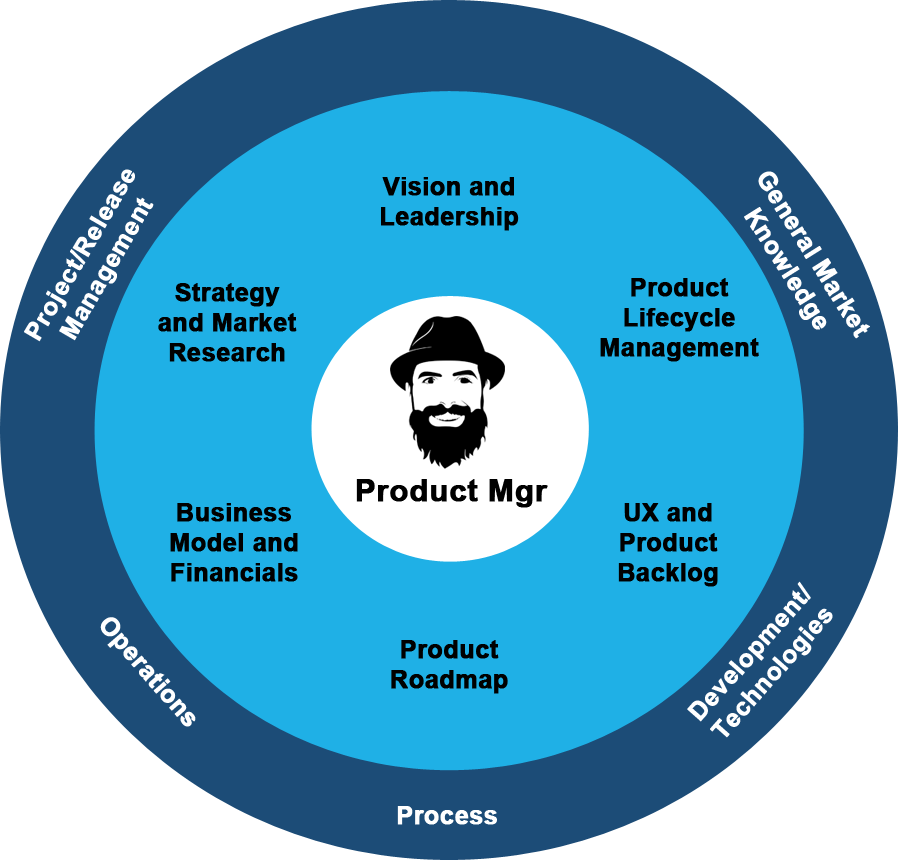

Software Engineering

As a graduate of one of the top Coding Academies in the country - CodeFellows, I bring with me a strong
Front and Back End skillset. Whether its Front End Development, Styling, or Database management, I have
the tools to be a value add to your team.
Product Management

I love the idea of supporting a company's vision, through solid Product Management. By backgound in the
nonprofit sector, and the people skills that I've honed, along with my hard skills in Software
Development, make me an ideal candidate to support a company's ambitious product marketing plans.
Community Impact
Although I love what I do, I also love serving my community. When I left the service in 2013, I focused
on bettering my community, and having a lasting impact. To that end, I love working with companies who
also look to serve their community, by giving back in a wide variety of ways.